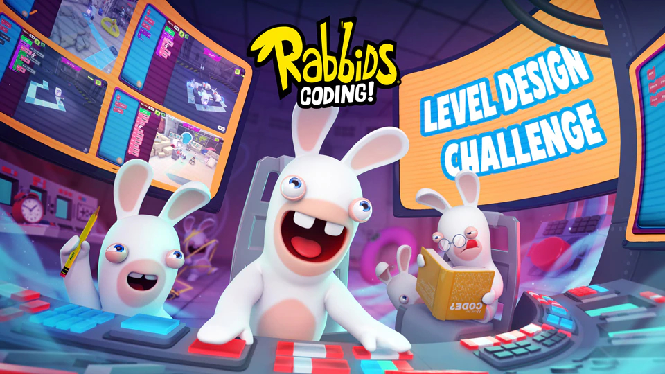
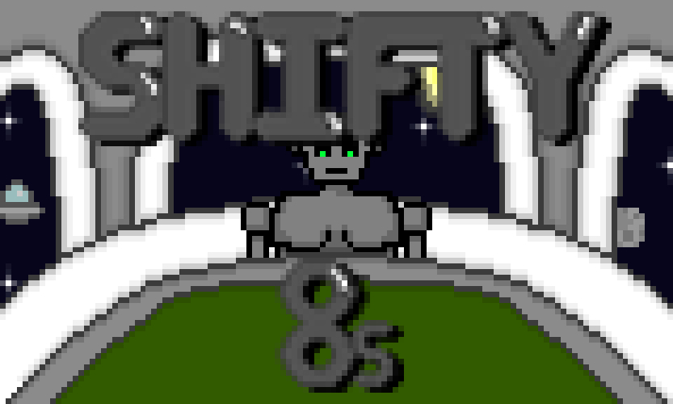

PORTFOLIO
RABBIDS CODING! LEVEL DESIGN CHALLENGE
Winner
Level Design
As part of an opportunity with Ubisoft and Bibliothèque Sans Frontières, I designed a level for Rabbids Coding. The final level was submitted and tested by a team at Ubisoft, and was ultimately one of the 8 levels to be selected to be added into the game, out of 70 different submitted levels.
The competition allowed me to apply my level design skills to an industry project, as well as further honing my skills and gaining some industry experience in the process. As a team, we created multiple different levels before choosing one to refine as the final product; I lead the team, and the level that we ultimately picked was one that I designed.
The level is available to play in-game now, it is Level 33. The game is available for PC from the Ubisoft Store.
Design Process and Level Playthrough Video:
SHIFTY 8s
Major Jam 4: Cosmic
Gameplay Programming, Music
In a team, I took part in Major Jam 4: Cosmic and helped work on a card game called Shifty 8s. With the limitation of the game jam being that the player had to cheat, we implemented a feature involving the player removing cards from their hand when the enemy AI isn't looking. The whole project took place over the span of a week, and was built in Unity using C#.
The main role I took in the game jam team was programming the systems and gameplay mechanics, as well as implementing the AI logic so that it would interact with the game itself. I also assisted with the design of the cheating mechanic, as well as composing the music for the game.
The game can be downloaded through its itch.io page.
Gameplay Video:
PICCADILLY POTTERIA
Stoke on TREND Games Jam 2021

Game Design, Gameplay Programming, Music
As part of a collaboration between Staffordshire University and Stoke-on-Trent City Centre BID, in a team I took part in the Stoke on TREND Games Jam 2021, in which we worked on a project themed around Piccadilly Street in the town centre. Taking influence from the area's rich pottery history, as a team we designed a game based around moulding pottery based on requests and selling it, theming the game around being set in an old pizzeria. The project was developed over the span of 5 days, and was developed using Unreal Engine 4's blueprint system.
For the game, I helped design the gameplay systems, programmed the sculpting system, built the system that checked how close the player was to the request and handling generating the new requests based on different preset shapes. I also co-ordinated the team through the development of the project and composed the music tracks that were used in the game.
The game can be downloaded through its itch.io page.
Gameplay Video:
AMMO CRISIS
Level Design, Gameplay Design
As part of one of my university modules, I had to work in a framework to design and balance weapons and enemies, as well as creating a fun and balanced level. By working inside a Unreal Engine 4 framework it gave me a good insight into designing with mechanics and gameplay elements that other people have made.
When designing and creating the level, I produced a lot of design work including research into other shooter games for weapons, balancing weapons and enemies using charts in Excel, and creating bubble and pacing maps for the level itself.
Level Gameplay Video:
All my work from the Introduction to Games Design module can be found here.
TEMPLE OF THE DUCKS
Level Design, Gameplay Design, Gameplay Programming, Music
For the Introduction to 3D Games Engines module, I built a level using a pre-built first-person puzzle framework, and another building on third-person framework with custom blueprint functionality. Both levels were built in Unreal Engine 4, making use of a mixture of pre-built assets, royalty-free assets sourced online and custom assets built specifically for the project.